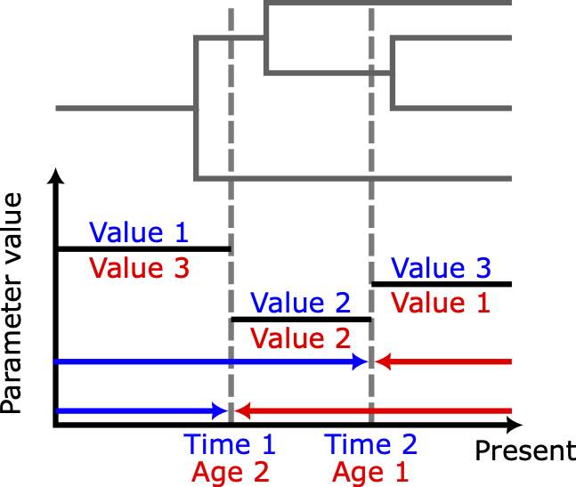
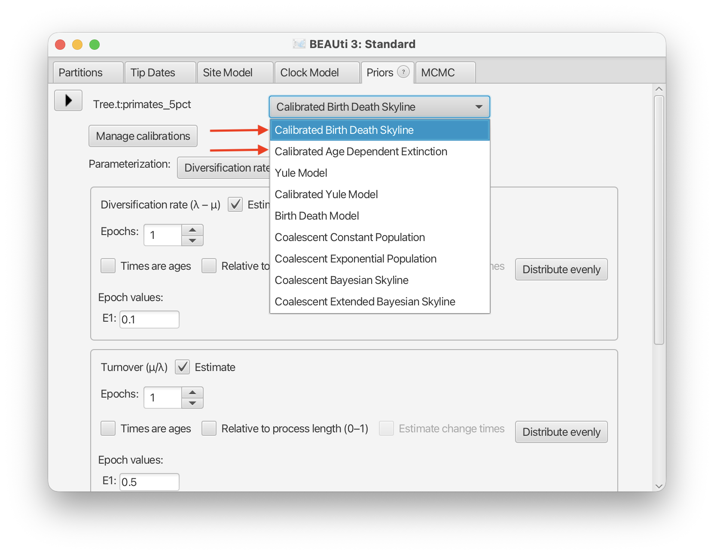
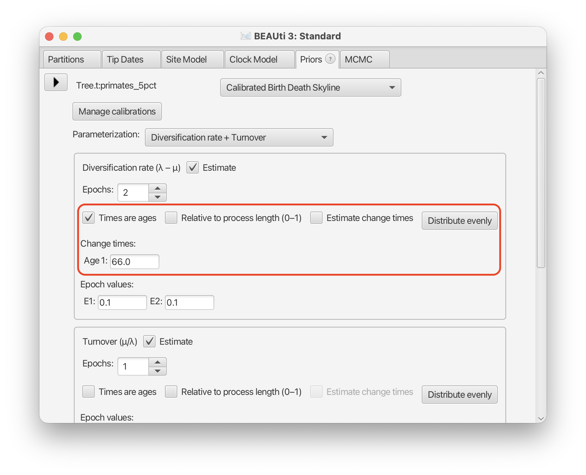
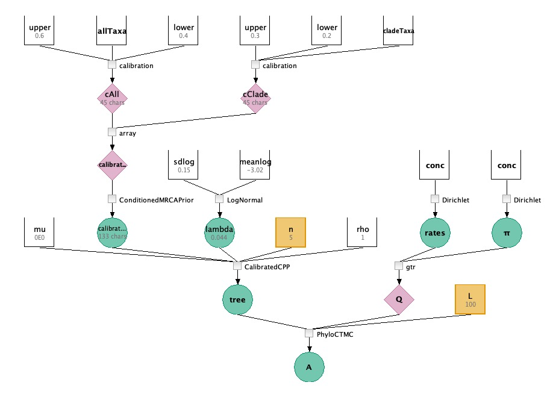

Bayesian Molecular Clock Dating
Bayesian molecular clock dating jointly infers substitution rates, diversificaiton dynamics, and time calibrated phylogenetic trees from molecular sequences. However, when sequences are taken from a single time (like extant species), calibrations derived from fossil data are needed to separate evolutionary distance (substitutions/site) into evolutionary rates (substitutions/site/time) and evolutionary time in calendar units. Calibrations take the form of priors on the TMRCA of clades we know are monophyletic, these priors are informed by occurence dates of fossils belonging to or ancestral to the clade.
Calibrated Tree Priors
Simply multiplying the calibration priors with tree prior with results in a marginal prior over the TMRCA of the calibration clades that is different from the one the user specifies. This can be problematic because now the prior used for calibrating the molecular clock into calendar time is not the prior supported by prior evidence. To deal with this, we introduce a Calibrated Tree Prior. This is the tree prior conditioned on calibration clades being monophyletic and having a specified TMRCA, calibration priors are then priors over these TMRCAs. This is a mathematically consistent factorisation of the priors and preserves the distribution specified by the user.
Coalescent Point Process Model
The Coalescent Point Process (CPP) (Lambert and Stadler (2012)) is a model of ultrametric phylogenetic trees where that captures a general class of birth-death processes with time-dependent birth and death rates (as in BDSKY) and age-dependent death rates:
- Individuals die at some rate $$\mu(x,t)$$ that depends on the age of the individual $$x$$ and the time $$t$$.
- Individuals give birth to new individuals at a rate $$\lambda(t)$$ depending only on time.
- Extant individuals are sampled independently with probability $$\rho$$.

The Calibrated CPP is a calibrated tree prior built on the CPP: it is used for molecular clock dating by conditioning on the existence and ages of the most recent common ancestors (MRCAs) of monophyletic clades — i.e. fossil or other external age evidence.
The package provides two tree priors — a birth-death skyline model and an age-dependent birth-death model — together with a shared way to specify calibrations. The sections below describe each in turn, then show how to set them up in BEAST3 XML, in BEAUti, and in an LPhy script.
Birth-Death Skyline
Rates are piecewise-constant over time (as in BDSKY): each of birth rate $$\lambda(t)$$, death rate $$\mu(t)$$, diversification rate $$d(t)=\lambda-\mu$$, reproductive number $$R_e(t)=\lambda/\mu$$, and turnover $$\tau(t)=\mu/\lambda$$ takes a different value in a series of time intervals ("epochs"). You parameterise the model with any two of these five rates, plus the sampling probability $$\rho \in [0,1]$$; the other three are then determined. A single epoch recovers the ordinary constant-rate birth-death process.
Skyline parameters
Each time-varying rate is a skyline parameter — a list of values, one per epoch, together with the times at which they change:
- Values — the rate in each epoch, ordered from the root towards the present
(if
timesAreAges="false") or present towards the root (iftimesAreAges="true"). - Change times — the epoch boundaries. They can be fixed by the user or estimated, and given as ages before the present, as forward times, or as fractions of the tree's total age. If omitted, the epochs are spread evenly over the age of the tree.

The process is anchored in time in one of two ways: by conditioning on the tree's root height, or by giving an explicit origin time (the start of the process, which must predate the root).
Age Dependent Extinction
Individuals give birth at a constant rate $$\lambda$$, but rather than dying at a constant rate $$\mu$$ (which implies exponentially distributed lifetimes), their lifetimes are drawn from an arbitrary distribution that you supply. The model takes:
- a birth rate $$\lambda$$,
- a lifetime distribution (e.g. Exponential, Gamma, Erlang, Weibull, or Log-Normal),
- the sampling probability $$\rho$$.
The Erlang case (a Gamma distribution with integer shape) has a fast closed-form solution; the general case is solved numerically as a Volterra integro-differential equation. As with the skyline model, the process is anchored by conditioning on the root height or by an explicit origin time.
Specifying Calibrations
Both tree priors are calibrated: on top of the birth-death dynamics you supply a set of calibrations. A calibration is a clade — a named set of taxa — that is constrained to be monophyletic, together with a soft lower and upper bound on the age of its MRCA, coming from fossil or other external evidence.
The tree prior can be conditioned on the calibrations holding (the default), or they can be left as ordinary prior information. Calibrations are specified the same way regardless of which of the two models you use — either as explicit taxon sets with age bounds, or compactly as a single constraint-tree string. The sections below show both forms.
Constraint tree format for calibration information
A constraint tree encodes information about the calibrations like the clades and upper/lower bounds into one Newick
string. Internal nodes carry a metadata annotation block
([&key=value,...]) giving the node a name and/or a soft age interval, as
in the examples below. Topology is used only to derive taxon sets — branch lengths
and tree shape carry no other meaning. For every internal node:
| Key | Aliases | Type | Effect |
|---|---|---|---|
name | — | string | Sets the node's ID (TaxonSet ID, and CalibrationCladePrior ID if bounds are also present) |
lower | lowerAge | double | Soft lower age bound for the clade's MRCA |
upper | upperAge | double | Soft upper age bound for the clade's MRCA |
virtualRoot | — | boolean | Excludes the node from output — lets the outermost parenthesis bundle several independent calibrations without being read as a whole-tree calibration |
A node with neither name nor bounds is purely structural (groups taxa, emits nothing). A node with both lower and upper produces a TaxonSet and a CalibrationCladePrior; nested clades (subset taxa) are fitted jointly, but partially-overlapping clades are invalid.
More worked examples:
<!-- single calibrated clade -->
(A,B)[&name=Root,lower=10.0,upper=20.0];
<!-- nested calibrations: Inner's taxa are a subset of Outer's -->
((A,B)[&name=Inner,lower=5.0,upper=10.0],C)[&name=Outer,lower=15.0,upper=30.0];
<!-- named clade, no bounds: a topology-only constraint, no CalibrationCladePrior -->
(A,B)[&name=TopClade];
& must be XML-escaped as & inside the
newick attribute, since [&...] reuses standard
NEXUS/BEAST metadata-annotation syntax. An empty string (or one that trims to
""/";") means no calibrations — this is the default, so omitting
calibrationForest entirely is fine if you have none.
Specify an analysis in BEAST3 XML
A Calibrated CPP analysis needs a tree prior distribution — either the birth-death skyline model or the age-dependent birth-death model — and, if you have fossil or other external age evidence, a set of calibrations. Both tree priors share these inputs:
| Input | Type | Meaning |
|---|---|---|
tree | Tree | The phylogenetic tree |
origin | RealScalar | Start time of the process (optional) |
conditionOnRoot | Boolean | Condition on the root height instead of an origin. Either origin must be given, or this must be true. |
calibrations | List<TaxonSet> | Clades to condition as monophyletic, with their MRCA age (see Specifying Calibrations). A TaxonSet containing every taxon is equivalent to conditionOnRoot=true. |
calibrationForest | CalibrationForest | Alternative way to supply calibrations — typically a CalibrationForestParser built from a constraint-tree Newick string. Provide exactly one of calibrations / calibrationForest. |
conditionOnCalibrations | Boolean | Whether to condition on the supplied calibrations. Default true. |
Initialising a valid tree
A valid tree needs to be initialised satisfying monophyly constraints as well as any hard calibration bounds. This can be acheived with theCalibratedCPPTreeInitialiser in an init element after the
state element where the tree is defined in the usual way. The following example assumes there is
an alignment element with id="alignment".
<state id="state" spec="State" storeEvery="5000">
<tree id="tree" spec="beast.base.evolution.tree.Tree" name="stateNode">
<taxonset id="taxa" spec="TaxonSet">
<alignment idref="alignment"/>
</taxonset>
</tree>
<!-- other stateNodes -->
</state>
<init id="InitialTree" spec="calibratedcpp.CalibratedCPPTreeInitialiser" estimate="false" initial="@tree"/>Birth-Death Skyline
calibratedcpp.CalibratedBirthDeathSkylineModel takes any two
of the five rates — birthRate, deathRate,
diversificationRate, reproductiveNumber, turnover —
as SkylineParameter inputs (piecewise-constant over time), plus
rho (sampling probability, valued in $$[0,1]$$) as a RealScalar. A
single-epoch skyline parameter recovers the constant-rate case.
Skyline parameters
Each rate is a calibratedcpp.SkylineParameter, which takes:
| Input | Type | Meaning |
|---|---|---|
values | RealVector (RealScalar if single-epoch) | Parameter value in each epoch, ordered root → tips |
changeTimes | RealVector | Optional epoch-boundary times. If omitted, epochs are spread evenly over the tree's age. |
timesAreAges | Boolean | true if changeTimes are ages before the present. Default false. |
timesAreRelative | Boolean | true if changeTimes are relative to the tree's age. Default false. |
If multiuple values are supplied but no change times then the change times are evenly distributed along the length of the process (root age or origin age depending on the conditioning).
Worked example
Conditioned on the root, parameterised by a two-epoch diversification rate and a constant turnover:
<state id="state" spec="State" storeEvery="5000">
<!-- rate values: a two-epoch diversification rate (vector), a constant turnover -->
<stateNode id="diversificationValues" spec="beast.base.spec.inference.parameter.RealVectorParam"
domain="PositiveReal" dimension="2">0.2 0.1</stateNode>
<stateNode id="turnoverValue" spec="beast.base.spec.inference.parameter.RealScalarParam"
domain="UnitInterval" value="0.5"/>
</state>
<distribution id="treePrior" spec="calibratedcpp.CalibratedBirthDeathSkylineModel"
tree="@tree" conditionOnRoot="true" rho="0.1">
<!-- two-epoch diversification rate; one change time (as an age) splits it in two -->
<diversificationRate spec="calibratedcpp.SkylineParameter"
values="@diversificationValues" changeTimes="30.0" timesAreAges="true"/>
<!-- constant turnover: a single value, no change times -->
<turnover spec="calibratedcpp.SkylineParameter" values="@turnoverValue"/>
</distribution>
Each SkylineParameter's values reference a
RealVectorParam when there is more than one epoch, or a
RealScalarParam for a single constant value. To add calibrations, supply them
to the tree prior and a matching CalibrationPrior as shown in
Specifying Calibrations below.
Age Dependent Extinction
calibratedcpp.CalibratedAgeDependentExtinctionModel replaces the constant
death rate with an arbitrary lifetime distribution:
| Input | Type | Meaning |
|---|---|---|
lifetimeDistribution | ParametricDistribution | Distribution of individual lifetimes (e.g. an Erlang / integer-shape Gamma for the fast closed-form case) |
birthRate | RealScalar | Rate $$\lambda$$ at which individuals give birth |
rho | RealScalar | Sampling probability for each extant individual |
<state id="state" spec="State" storeEvery="5000">
<stateNode id="birthRate" spec="beast.base.spec.inference.parameter.RealScalarParam"
domain="PositiveReal" value="1.0"/>
<stateNode id="lifetimeShape" spec="beast.base.spec.inference.parameter.RealScalarParam"
domain="PositiveReal" value="2.0"/>
<stateNode id="lifetimeScale" spec="beast.base.spec.inference.parameter.RealScalarParam"
domain="PositiveReal" value="1.5"/>
</state>
<distribution id="treePrior" spec="calibratedcpp.CalibratedAgeDependentExtinctionModel"
tree="@tree" conditionOnRoot="true" birthRate="@birthRate" rho="0.1">
<!-- Gamma lifetimes (shape alpha, scale theta); an integer shape gives the fast Erlang case -->
<lifetimeDistribution id="lifetime" spec="beast.base.spec.inference.distribution.Gamma">
<alpha idref="lifetimeShape"/>
<theta idref="lifetimeScale"/>
</lifetimeDistribution>
</distribution>Specifying Calibrations
Every calibration is a clade — a set of taxa — with a soft lower and
upper bound on the age of its MRCA. There are two ways to write them:
as explicit taxon sets plus CalibrationCladePrior blocks, or as a single
constraint tree string (see Constraint tree
format). Provide exactly one of the two to each prior. Calibrations work identically
for both tree priors.
As taxon sets and calibration clade priors
Declare a TaxonSet for each calibrated clade, then reference it from two
places: the tree prior's calibrations list (which conditions on the clade
being monophyletic), and a CalibrationCladePrior inside
CalibrationPrior (which carries the lowerAge/upperAge
bounds). The tree prior declares each taxon set inline; the calibration prior just refers
back to it by id.
<!-- Tree prior: taxon sets are declared here as the calibrations to condition on -->
<distribution id="treePrior" spec="calibratedcpp.CalibratedBirthDeathSkylineModel"
tree="@tree" conditionOnRoot="true"
diversificationRate="@diversification" turnover="@turnover" rho="@rho">
<calibrations id="Clade1" spec="TaxonSet">
<taxon idref="A"/>
<taxon idref="B"/>
</calibrations>
<calibrations id="Clade2" spec="TaxonSet">
<taxon idref="C"/>
<taxon idref="D"/>
</calibrations>
</distribution>
<!-- Calibration prior: one CalibrationCladePrior per clade, carrying the age bounds -->
<distribution id="calibrationPrior" spec="calibrationprior.CalibrationPrior" tree="@tree">
<calibration id="Clade1Prior" spec="calibrationprior.CalibrationCladePrior" taxa="@Clade1">
<lowerAge spec="beast.base.spec.inference.parameter.RealScalarParam"
domain="NonNegativeReal" value="10.0"/>
<upperAge spec="beast.base.spec.inference.parameter.RealScalarParam"
domain="NonNegativeReal" value="20.0"/>
</calibration>
<calibration id="Clade2Prior" spec="calibrationprior.CalibrationCladePrior" taxa="@Clade2">
<lowerAge spec="beast.base.spec.inference.parameter.RealScalarParam"
domain="NonNegativeReal" value="5.0"/>
<upperAge spec="beast.base.spec.inference.parameter.RealScalarParam"
domain="NonNegativeReal" value="15.0"/>
</calibration>
</distribution>
The taxa="@Clade1" reference on each CalibrationCladePrior points
at the same TaxonSet the tree prior conditions on. Each clade needs
both a lowerAge and an upperAge (both NonNegativeReal,
with lowerAge ≤ upperAge); an optional
confidenceLevel (default 0.9) sets how much probability mass the
soft bounds enclose. Nested clades (one clade's taxa a subset of another's) are fitted
jointly; partially-overlapping clades are invalid.
MRCAPriors
Instead of a CalibrationCladePrior, you can place a standard BEAST
MRCAPrior on a clade with an explicit distribution over its MRCA age (here a
hard Uniform bound). The taxonset and tree inputs are
required, and monophyletic="true" constrains the clade:
<distribution id="Clade1Prior" spec="beast.base.spec.evolution.tree.MRCAPrior"
monophyletic="true" taxonset="@Clade1" tree="@tree">
<distr id="Uniform1" spec="beast.base.spec.inference.distribution.Uniform"
lower="10.0" upper="20.0"/>
</distribution>Inputting a calibration forest (constraint tree)
The objects CalibratedBirthDeathSkylineModel, CalibratedAgeDependentBirthDeathModel and CalibrationPrior
take a CalibrationForest via their calibrationForest input. The easiest way to build one is
calibration.CalibrationForestParser, which parses a constraint-tree Newick string (see
Constraint tree format above) — it is to CalibrationForest what
TreeParser is to Tree. Because the parsed object is a CalibrationForest, a
single declaration can be shared by idref across the tree prior and the CalibrationPrior, so both
models read identical clades from one source. For CalibrationPrior the clades must carry
upper and lower annotations, since bounds are required by the CalibrationPrior object.
<distribution id="treePrior" spec="calibratedcpp.CalibratedBirthDeathSkylineModel"
tree="@tree" conditionOnRoot="true"
diversificationRate="@diversification" turnover="@turnover" rho="@rho">
<calibrationForest spec="calibration.CalibrationForestParser" id="myConstraints"
newick="((A,B)[&name=Clade1,lower=10.0,upper=20.0],
(C,D)[&name=Clade2,lower=5.0,upper=15.0])[&virtualRoot=true];"/>
</distribution>
<distribution id="calibrationPrior" spec="calibrationprior.CalibrationPrior"
tree="@tree" calibrationForest="@myConstraints"/>
A CalibrationForest can also be built declaratively without Newick, via its
calibration (list of CalibrationCladePrior, with bounds) and/or
taxonSet (list of bound-free TaxonSet) inputs — useful when the clades are
already defined elsewhere in the XML.
Specify an analysis in BEAUti
Once the package is installed (see the repository README), Calibrated CPP appears as a
tree prior option in BEAUti, alongside Yule, Birth-Death, and Coalescent. Set up your
alignment, site model, and clock model as normal, then in the Priors
panel set the tree prior for Tree.t:... to either Calibrated
Birth-Death Skyline or Calibrated Age Dependent Extinction.

The rate settings differ between the two models (below), but they share the same Conditioning controls and the same Manage calibrations editor.
Birth-Death Skyline
Parameterization
A Parameterization dropdown lets you pick which two rate parameters to estimate: any pair from birth rate, death rate, diversification rate, reproductive number, and turnover (e.g. "Diversification rate + Turnover", "Birth rate + Death rate"). The other three are then derived automatically.

Extant sampling probability (ρ)
Set the sampling probability ρ — either a fixed value, or check Estimate to sample it as part of the analysis.
Epochs (skyline parameters)
For the piecewise-constant (skyline) rates, an Epochs section lets you set the number of intervals, the epoch values (root → present), and the change times between them. Change times can be entered as ages or as fractions of the process length (check Times are ages / Relative to process length accordingly), or spread evenly with Distribute evenly. A single epoch gives constant rates. The following image shows an example where the diversificaton rate has a change time 66 million years before the present at the time of the K-Pg mass extinction. Optionally, you can choose to estimate the change times by clicking Estimate change times.

Conditioning
Under Conditioning, choose how the process is anchored in time:
- Condition on root — the process is conditioned on the tree's root height.
- Set origin time — give an explicit origin (start of the process, which may predate the root), with its own value and an optional Estimate checkbox.

Age Dependent Extinction
Birth rate (λ)
Set the constant birth rate λ — a fixed value, or check Estimate to sample it.
Lifetime distribution
A Lifetime distribution dropdown selects the distribution of individual lifetimes: Exponential, Gamma, Erlang (Gamma with an integer shape k — the fast closed-form case), Weibull, or Log-Normal. The fields below the dropdown change to the parameters of the chosen distribution (e.g. a mean for Exponential, a shape and rate for Gamma).

Extant sampling probability (ρ)
Set the sampling probability ρ — either a fixed value, or check Estimate.
Conditioning
The same Conditioning controls apply: Condition on root or Set origin time, exactly as described for the skyline model above.
Specifying Calibrations
Both editors provide the same calibration workflow. Click Manage calibrations to open the calibration editor.

In the dialog:
- Click + Add to create a new calibration, then set its Lower / Upper age bounds.
- Under Direct taxa, check the taxa that belong directly to this clade.
- Under Child calibrations, check any other calibration to nest it inside this one (its taxa become part of this clade too). Nesting that would create a cycle is disabled.
- Remove a calibration with the × button.

If you already have calibrations as a
constraint-tree Newick string, use
Import Newick… instead of building clades by hand — paste the
string (annotations of the form [&name=Label,lower=X,upper=Y]) and click
Import. Use Export Newick… to go the other way and
copy out the current calibrations as a string. Click Save & Close when done.
Setting Calibration Priors
Once you have defined your calibrations, you can specity the calibration priors in the Calibration Prior panel. You can choose CalibrationPrior which jointly fits distributions to all calibrations treating the provided upper and lower as soft calibration bounds.

Alternatively, you can choose MRCAPrior which
independently puts a specified distribution on each calibrations. The default distribution is Uniform with the provided upper and lower bounds
or 0 to 10 if no bounds are provided in the Calibration Manager.

Specify an analysis in an LPhy script
In LPhy, this
package contributes four generative distributions over tip-labelled time trees, plus the
calibration machinery they share. All are registered by the
calibratedcpp lphy library extension.
| Distribution | Node-age law | Calibrated? |
|---|---|---|
CalibratedCPP | constant-rate birth-death | yes |
CalibratedBirthDeathSkylineTree | piecewise-constant (skyline) birth-death | yes |
CalibratedAgeDependentExtinctionTree | arbitrary lifetime distribution | yes |
CPP | constant-rate birth-death | no — the plain CPP |
Arguments shared by the calibrated distributions
All three calibrated distributions accept the same set of tree-shaping arguments. Only the rate parameters differ.
| Parameter | Required? | Meaning |
|---|---|---|
rho | required | sampling probability |
n | optional | total number of taxa. Can be optional only for an uncalibrated tree, then a random number of tips would apply. |
calibrations | optional | a CalibrationArray — see Specifying calibrations below |
otherNames | optional | taxon names for tips that belong to non calibrated clade |
stemAge | optional | stem age to condition on. Ignored, with a warning, if a root calibration covering all n taxa is also given. |
rootAge | optional | root age to condition on |
Birth-Death (constant rates)
CalibratedCPP takes any two of the four rate parameters
below, while the other two can be calculated according to the ones given.
| Parameter | Required? | Meaning |
|---|---|---|
lambda | exactly two of these four | per-lineage birth rate |
mu | per-lineage death rate | |
diversification | diversification rate (lambda - mu) | |
turnover | turnover (mu / lambda) |
Plus the shared arguments above. One calibrated clade with soft bounds and a fixed stem age:
model {
clade1 = ["leaf_1", "leaf_2"];
c1 = calibration(taxa=clade1, lower=0.05, upper=0.2);
calibrations ~ ConditionedMRCAPrior(calibrations=[c1]);
tree ~ CalibratedCPP(lambda=2, mu=0, rho=1, n=4, calibrations=calibrations, stemAge=1);
}Birth-Death Skyline
CalibratedBirthDeathSkylineTree is the piecewise-constant version. Its rate
arguments are arrays — one value per interval — rather than
scalars, and it takes exactly two of five rates:
| Parameter | Required? | Meaning |
|---|---|---|
lambda | exactly two of these five | per-interval birth rate |
mu | per-interval death rate | |
diversification | per-interval diversification (lambda - mu) | |
turnover | per-interval turnover (mu / lambda) | |
reproductiveNumber | per-interval reproductive number (lambda / mu) | |
changeTimes | optional | rate change times, as absolute ages, strictly increasing. Length must be one less than the number of rate values. Omit for a single interval. |
reproductiveNumber and turnover cannot both be given, since one
determines the other.
timesAreAges="true" convention, which is what LPhyBEAST writes out. The
relative and root-to-present orderings described under
Skyline parameters are available for inference in XML, but not from
the LPhy generator.
model {
// two intervals, with the rate change 66 Ma
tree ~ CalibratedBirthDeathSkylineTree(
diversification=[0.1, 0.3], turnover=[0.5, 0.2],
changeTimes=[66.0], rho=0.1, n=50, calibrations=calibrations);
}Age Dependent Extinction
CalibratedAgeDependentExtinctionTree replaces the constant death rate with a
lifetime distribution. Give one of lambda or reproductiveNumber:
| Parameter | Required? | Meaning |
|---|---|---|
lambda | one of these two | per-lineage birth rate |
reproductiveNumber | $$R_0 = \lambda \cdot \mathrm{mean}(\text{lifetime})$$, $$R_0 > 1$$ is supercritical | |
lifetimeModel | required | the individual lifetime law — must come from one of the lifetime functions below |
lifetimeModel takes a LifetimeModel value, not an ordinary LPhy
distribution. Build it with one of:
| Function | Arguments |
|---|---|
expLifetime | mean (= 1 / death rate; reduces to the constant-rate case) |
gammaLifetime | shape, scale |
weibullLifetime | shape, scale |
weibullMixtureLifetime | two components’ shapes and scales, plus optional weights (default 0.5/0.5) |
Their parameters can themselves be random variables, and are then estimated:
model {
shape ~ LogNormal(meanlog=0.4, sdlog=0.25);
scale ~ LogNormal(meanlog=0.7, sdlog=0.25);
lifetimeModel = weibullLifetime(shape=shape, scale=scale);
lambda ~ LogNormal(meanlog=0.5, sdlog=0.25);
c1 = calibration(taxa=clade1, upper=1.2, lower=0.8);
c2 = calibration(taxa=clade2, upper=2.4, lower=1.8);
calibrations ~ ConditionedMRCAPrior(calibrations=[c1, c2]);
tree ~ CalibratedAgeDependentExtinctionTree(
lambda=lambda, lifetimeModel=lifetimeModel, rho=1,
n=30, calibrations=calibrations, stemAge=5.0);
}stemAge or rootAge gives an exact bound for
the age range. Without one, the upper bound is determined heuristically, and age beyond this limit are clamped.
The standard CPP
CPP is the plain Coalescent Point Process, with no calibrations. It takes the
same two-of-four rate parameters as CalibratedCPP, plus:
| Parameter | Required? | Meaning |
|---|---|---|
rho | required | sampling probability |
n | optional | number of tips, a random number of tips is generated if it's not specified |
taxa | optional | taxon names |
rootAge | optional | root age to condition on |
randomStemAge | optional | sample the origin from the max-of-n node-age law instead of conditioning on a root. Overrides rootAge. |
lambda ~ LogNormal(meanlog=1.0, sdlog=1.0);
mu ~ Uniform(lower=0.5, upper=1.0);
rho ~ LogNormal(meanlog=0.4, sdlog=0.2);
T ~ CPP(lambda=lambda, mu=mu, rho=rho, n=5, rootAge=0.5);Specifying calibrations
Every calibrated distribution takes its calibrations argument as a
CalibrationArray. There are two ways to build it:
Jointly, with ConditionedMRCAPrior
The usual route, and the one that makes this a properly calibrated tree prior. Declare each
clade with calibration(), then pass the list to
ConditionedMRCAPrior:
| Name | Parameter | Meaning |
|---|---|---|
calibration(function) | taxa | taxon names whose MRCA is being calibrated |
upper | upper bound on the MRCA age | |
lower | lower bound on the MRCA age | |
ConditionedMRCAPrior(distribution) | calibrations | the array of calibration() values |
coverage | optional confidence level — the probability mass falling between lower and upper after truncation. Default 0.9. |
ConditionedMRCAPrior fits distributions to all the clades jointly,
working out the nesting from the taxon lists: nested clades are handled as truncated or
ratio distributions so that an inner clade is always younger than its parent.
This is why the bounds are soft — coverage of the fitted
mass lies inside them, and the rest does not.
model {
taxaAll = ["A", "B", "C", "D", "E"];
clade1 = ["A", "B"];
cAll = calibration(taxa=taxaAll, lower=29.0, upper=35.0);
c1 = calibration(taxa=clade1, lower=10.5, upper=29.5);
calibrations ~ ConditionedMRCAPrior(calibrations=[cAll, c1], coverage=0.95);
tree ~ CalibratedCPP(calibrations=calibrations, turnover=turnover,
diversification=diversification, n=5, rho=rho);
}Independently, with UniformMRCA / OffsetExponentialMRCA
Each clade gets its own independent prior on its MRCA age, and toArray
collects them. Useful for fixing clade ages exactly to set lower equal to upper,
and also fit most fossil calibrations. It does not give the joint, nesting-aware prior above.
| Distribution | Parameters |
|---|---|
UniformMRCA | taxa, upper, lower — age uniform between the bounds |
OffsetExponentialMRCA | taxa, offset (hard minimum), mean (of the exponential) |
calibration1 ~ UniformMRCA(taxa=clade1, upper=0.4, lower=1.0);
calibration2 ~ UniformMRCA(taxa=clade2, upper=1.2, lower=1.7);
calibrationsArray = toArray(calibrations=[calibration1, calibration2]);
tree ~ CalibratedCPP(lambda=2, mu=1, rho=0.1, n=100, calibrations=calibrationsArray, stemAge=3);Converting to BEAST3 XML with LPhyBEAST
Each tree distribution has a converter, so the generated XML uses the corresponding BEAST class:
| LPhy | BEAST3 |
|---|---|
CalibratedCPP | calibratedcpp.CalibratedBirthDeathSkylineModel, single interval |
CalibratedBirthDeathSkylineTree | calibratedcpp.CalibratedBirthDeathSkylineModel, one SkylineParameter per rate (timesAreAges="true") |
CalibratedAgeDependentExtinctionTree | calibratedcpp.CalibratedAgeDependentExtinctionModel, with the lifetime function mapped to the matching BEAST distribution |
calibration() + ConditionedMRCAPrior | a joint monophyletic calibrationprior.CalibrationPrior, plus a TaxonSet per clade |
conditionOnRoot and conditionOnCalibrations are set from the command:
conditioning on calibrations is switched on by default when calibrations are present. Two
flags overwrite the default BEAST3 XML mapping at conversion time:
| Flag | Effect |
|---|---|
-MRCAPrior( --mrcaPrior) | emit an independent per-clade MRCAPrior(Uniform(lower, upper)) instead of the joint CalibrationPrior |
-conditionOnCalibrations true|false | override whether the tree prior is conditioned on the calibrations |
mvn -pl calibratedcpp-lphybeast-launcher exec:exec \
-Dlphybeast.args="convert ../calibratedcpp-lphy/examples/cats.lphy"
Note that reproductiveNumber on the age-dependent model is resolved to a fixed
birthRate in the XML rather than being carried across as an estimated
parameter. See the repository README for the full set of launcher options.
Trying it out in LPhy Studio
LPhy Studio lets you type or load an
.lphy script and inspect the simulated tree, calibrations, sampled ages, and simulated alignment.
before converting to BEAST3 XML.

Citing
If you use Calibrated CPP in your research, please cite Lambert and Stadler (2012) for the underlying Coalescent Point Process theory, and link back to this repository.
License
CalibratedCPP is free software. It may be modified and distributed under the terms of the GNU General Public License version 3 or, at your option, any later version.